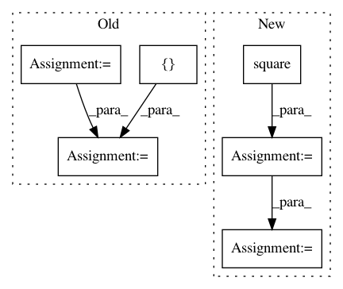

b7b1bd5c6f7892061a9915cd27d19360482d1fd8,lib/model/losses.py,,gmsd_loss,#Any#Any#,556
Before Change
true_edge_mag = scharr_edges(y_true, True)
pred_edge_mag = scharr_edges(y_pred, True)
cnst = 0.002
upper = 2.0 * tf.multiply(true_edge_mag, pred_edge_mag) + cnst
lower = tf.square(true_edge_mag) + tf.square(pred_edge_mag) + cnst
gms = tf.div(upper, lower)
_mean, _var = tf.nn.moments(gms, axes=[1, 2], keep_dims=True)
// single metric value per image in tensor [?, 1, 1]
gmsd = tf.reduce_mean(tf.sqrt(_var), axis=-1)
// need to expand to [?, height, width] dimensions for Keras ... modify to not be hard-coded
return K.tile(gmsd, [1, 64, 64])
After Change
pred_edge = scharr_edges(y_pred, True)
ephsilon = 0.0025
upper = 2.0 * true_edge * pred_edge
lower = K.square(true_edge) + K.square(pred_edge)
gms = (upper + ephsilon) / (lower + ephsilon)
gmsd = K.std(gms, axis=(1, 2, 3), keepdims=True)
gmsd = K.squeeze(gmsd, axis=-1)
return gmsd
def ms_ssim_calc(img1, img2, max_val=1.0, power_factors=(0.0517, 0.3295, 0.3462, 0.2726)):
In pattern: SUPERPATTERN
Frequency: 3
Non-data size: 6
Instances
Project Name: deepfakes/faceswap
Commit Name: b7b1bd5c6f7892061a9915cd27d19360482d1fd8
Time: 2019-08-03
Author: vrooman.kyle@gmail.com
File Name: lib/model/losses.py
Class Name:
Method Name: gmsd_loss
Project Name: GPflow/GPflow
Commit Name: b3dab0288ddcd165e2ba6f95061b5f3d7bf82a1a
Time: 2016-08-10
Author: james.hensman@gmail.com
File Name: GPflow/vgp.py
Class Name: VGP
Method Name: build_predict
Project Name: tensorlayer/tensorlayer
Commit Name: 641a28fbf0daff0ad1ad0f43d2c4b545cb6f9656
Time: 2019-02-16
Author: dhsig552@163.com
File Name: examples/reinforcement_learning/tutorial_cartpole_ac.py
Class Name: Critic
Method Name: learn